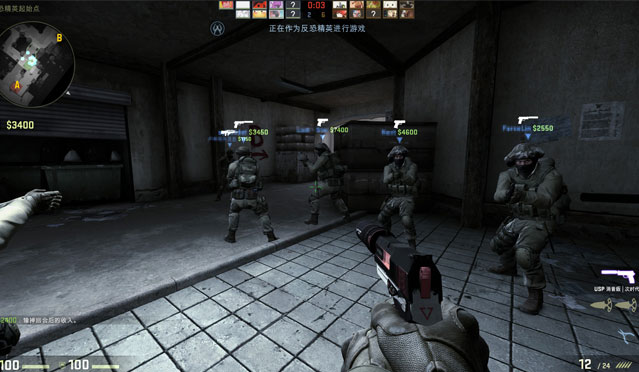
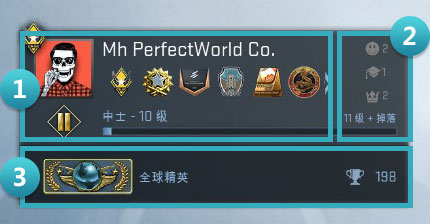
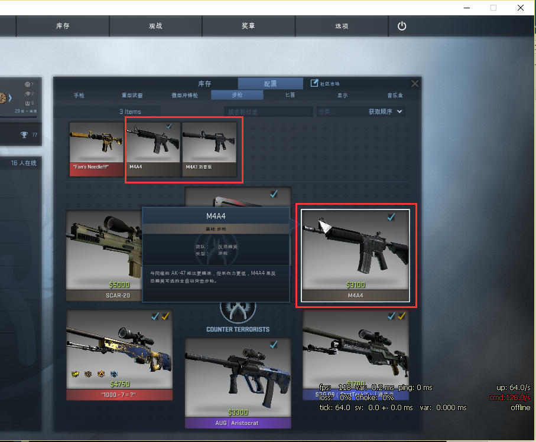

你好,请 登录

点击【库存】，可以看到【库存】列表和【配置】槽位，需要将库存中的武器提前放入各个槽位，这样在游戏中才可以购买对应武器装备。

点击【开始游戏】、【寻找一场游戏】，则会进入模式选择界面，在【普通】里有五种模式分别为死亡竞赛、军备竞赛、爆破模式、休闲模式、竞技模式，选择模式和对应的地图，点击【开始】就可以开始一盘CS:GO游戏啦。。
同时，如果是新人小白，也可以选择【开始游戏】、【武器课程】，开启CS:GO教学。

CS:GO依然继承经典CS玩法，游戏玩家分为CT与T两个阵营，双方需在一个地图上进行多回合的战斗，达到地图要求目标或消灭全部敌方则取得胜利。游戏标准竞技模式是5V5的对战规格，不同游戏模式的人数上限可以进行设置调节。
主界面：点击主界面（小房子），无论在哪个栏目均会回到如图的CS:GO主界面。
开始游戏：可以独自选择各模式游戏，也可以邀请好友一起；浏览社区服务器则可以加入其他人的社区服务器；同时也可以与电脑进行各个模式的离线游戏和武器课程来提高自己的水平。
库存：可以查看库存和配置各个槽位武器。
观战：观看锦标赛、直播、实况等内容，也可以查看玩家最近8盘的竞技比赛。
奖章：包括个人的数据统计和成就解锁进度。
选项：进行游戏的各项设置，也可以查看制作团队名单。
退出：退出游戏。
2. 个人资料 位置1：个人的头像（左上角为展示徽章）、昵称、徽章（纪念币、奖牌、勋章）。
位置2：称赞您友善的玩家数。笑脸：友善；博士帽：您是老师；皇冠：您是领导者。
位置3：经验军衔、经验等级和经验值、水平组军衔、竞技比赛升级次数。。
3. 好友可以显示所有在线好友和他们的状态，右键点击可以查看他们的个人资料或发送消息。
4. 新闻推送最新的官方新闻、更新日志等内容。
 1. 计分栏
1. 计分栏
显示对战双方的头像、存活人数等信息，中间为当前的比分。
2. 雷达上方文字显示地图点位，在游戏中和队友汇报敌人点位往往能带来胜利。
雷达中的红点为敌人，红色×为敌人死亡，红色？为不确定信息。
3. 金钱显示的数字为拥有的金钱数，用来购买武器和装备。
4. 信息面板显示各种系统提示及玩家间的交流信息。
5. 生命值和护甲显示当前生命值和护甲值，护甲图标内小头盔表示是否有购买头盔。
6. 击杀信息显示击杀者与被击杀者昵称，显示击杀武器和是否爆头。
7. 武器切换这里显示的是对应所切换的武器。
8. 弹药前面小头像标志表示当前回合击杀数，头像中心小点表示爆头。
前面数字表示当前弹药，后面数字表示可用剩余弹药，当蛋壳标志变红表示当前子弹快耗尽。
|
向前移动：W 向后移动：S 向左移动（平移）：A 向右移动（平移）：D 行走：SHIFT 跳跃：SPACE 下蹲：CTRL 装填弹药：R 上次使用的武器：Q 丢弃武器：G 使用（安装C4\拆除C4）：E 检视武器：F |
命令类无线电消息：Z 标准类无线电消息：X 报告类无线电消息：C 团队消息（己方）：U 聊天消息（全体）：Y 涂鸦：T 使用麦克风：K 购买菜单：B 自动购买：F3 重新购买：F4 计分板：TAB 选择队伍：M |
控制台：` 主武器：1 副武器：2 匕首：3 切换手雷：4 炸弹：5 高爆手雷：6 闪光震撼弹：7 烟雾弹：8 诱饵手雷：9 燃烧瓶：0 |
开火：MOUSE1-鼠标左键
第二开火：MOUSE2-鼠标右键
选择上一武器：MWHEELUP-鼠标滚轮向上
选择下一武器：MWHEELDOWN-鼠标滚轮向下
进入CS:GO游戏点击右上角【选项】，可以进行相关设置，如图1。

键盘/鼠标：设置您的鼠标灵敏度、鼠标加速以及键盘操作快捷键等。
游戏设置：可以选择游戏内界面风格，如准心颜色、风格等。
视频设置：设置相关视频选项。
如果您在CS:GO时有画面卡顿或卡读条进不去游戏的情况，则可以将【视频设置】中的视频选项根据实际情况进行调节，也可以点击【恢复默认】，自动根据您的系统配置进行设置，如图2,为恢复默认后的视频设置。
操作系统: Windows® 7/8/10/Vista/XP
处理器: 英特尔® 酷睿™2 双核E6600或AMD弈龙™ X3 8750 处理器或更好
内存: 2 GB RAM
图形: 显卡至少为256MB或更高，兼容DirectX 9并支持像素着色器3.0
9.0c
存储空间: 需要 15 GB 可用空间
《反恐精英：全球攻势》（CS:GO）是一款带有鲜明《反恐精英》（CS）色彩的续作，两者在内容玩法上没有太大的差异，CS:GO完美继承了老CS的经典模式和地图。同时，CS:GO进行了一系列精致的调整，使得它的战争场景更加真实、画面表现更加出色、游戏更加平衡。目前CS:GO已经成为全球FPS市场上最受欢迎的战术策略竞技游戏。
CS:GO相比CS，修改并增加了许多枪械，如子弹数量很少但是射速宛如冲锋枪的CZ75自动手枪（图1），威力巨大宛如大喷的R8左轮手枪（图2），老CS-B43的M4A1（图3）增加了兄弟武器M4A4，删除了老CS-B31的MP5但却增加了MP7（图4）、MP9等。
图1 C275自动手枪
图2 R8左轮手枪
图3 M4A1消音版
图4 MP7
相比CS，CS:GO增加了武器槽位的设置。您可以在每个槽位上选择您喜欢的武器，增加了游戏的多样性。例如在步枪的一个武器槽上，您可以选择M4A1-消音版，也可以选择M4A4（如图5），未来在比赛中购买的武器会根据您的槽位配置给出武器列表。
图5 M4A4与M4A1的槽位选择
同时，CS:GO增加了皮肤的概念。每个武器皮肤（包括刀）都有不同的品质和磨损度，图5中的蓝色、紫色、红色武器分别代表了不同的品质，这决定着它们的数量与价值。同时不同的磨损度则决定了武器的新旧程度，不同的磨损和皮肤搭配带来了CS:GO有成千上万种不同的武器，每个人的武器都几乎是独一无二的。最后，CS:GO中的部分武器具有StatTrakTM计数功能，记录你所有的击杀数。
你还可以为武器贴上各种各样的印花和贴纸（图6），打造属于你自己独特审美的专属武器。同时，CS:GO增加了音乐盒（图7）的功能，拥有一个带计数功能的音乐盒不仅可以为你带来更刺激的音乐，同时也可以记录你的MVP数，作为自己实力成长的一个验证。
图6 印花
图7 音乐盒
相信未来，作为csgoer的你，也一样会找到适合自己的主战武器，拥有一把绚丽的主战刀，不断解锁各式各样的武器皮肤。
CS:GO采用了圆盘状的武器购买界面（图8）。

图8 购买装备
2.弹药：CS:GO不再像CS一样需要单独购买子弹。同时也修改了很多武器弹药，例如老版的M4A1弹药30发，而CS:GO中的M4A1只有20发。
3.投掷物:CS:GO增加了燃烧瓶，燃烧瓶的加入让一些残局更加精彩。同时也修正了烟雾弹效果，让烟雾弹真的变成了一片不透明的灰雾，并且烟雾弹具有浇灭燃烧弹的功能。在CS:GO中学会如何充分地利用各种投掷道具，你会发现更多更爽快的乐趣。
CS:GO延续了4张老CS的经典地图作为现在的竞技地图，并额外增加了3张CS:GO竞技地图，分别是：de_mirage荒漠迷城， de_cache死城之谜，de_overpass死亡游乐园。
| CS老地图 | 玩家俗称 | CS:GO新地图中文名 |
| de_dust2 | 沙漠2 | 炙热沙城2 |
| de_nuke | 核工厂 | 核子危机 |
| de_cobblestone | 城堡 | 古堡激战 |
| de_train | 火车 | 列车停放站 |
京ICP备15025398号-2《网络文化经营许可证》编号： 京网文[2017]8929-1007号
 文网游进字[2017] 0084号
新广出审[2017] 6738号 皖网文许字[2014]1281-020号 ISBN: 978-7-7979-0692-0 | 家长监护 |
纠纷处理
文网游进字[2017] 0084号
新广出审[2017] 6738号 皖网文许字[2014]1281-020号 ISBN: 978-7-7979-0692-0 | 家长监护 |
纠纷处理